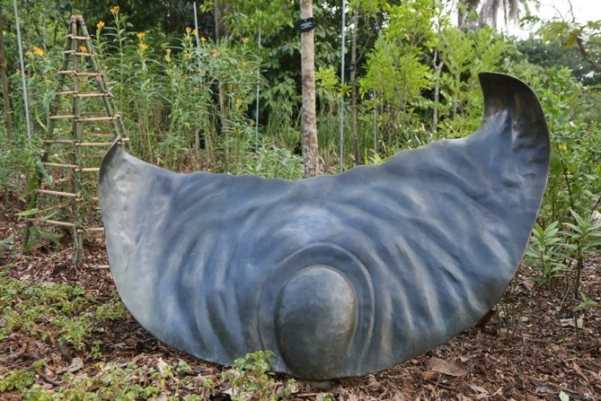
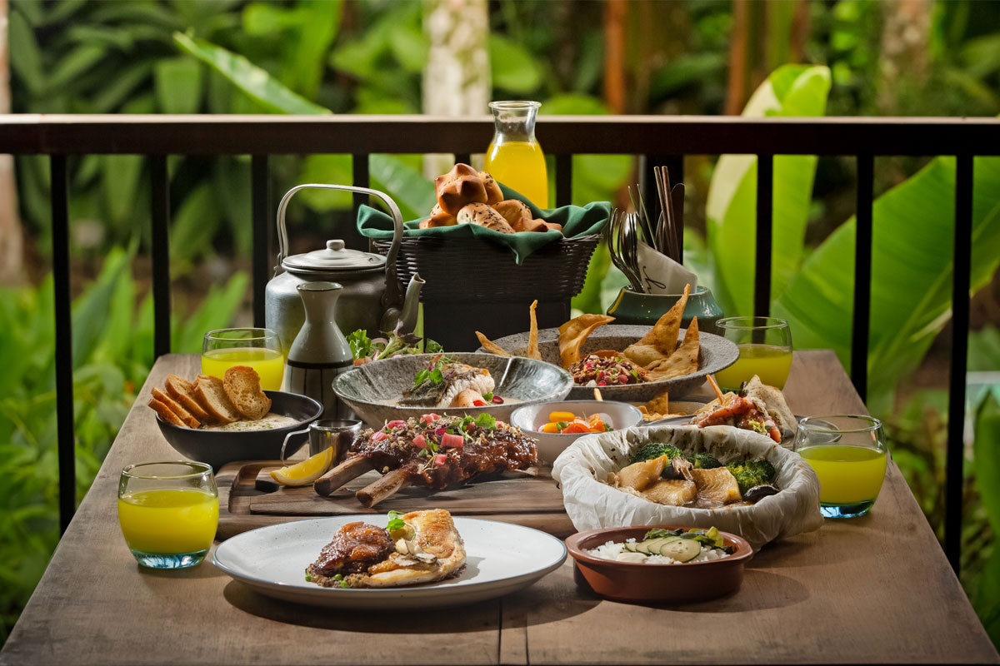

This is the first ever garden in Asia dedicated to children to instil a love for nature in children. There are many carefully curated trails which children may choose to follow and embark on an adventure!

8.00am - 7.00pm
(last admission at 6.30pm)
Closed on Mondays
Opened on 13 July 2019, the Singapore Botanic Gardens Seed Bank is a conservation, research and education facility that focuses on conserving plant species by preserving the seeds and germplasm of plants in Southeast Asia. The Seed Bank has an interpretive gallery that introduces the Seed Bank and explains its importance to plant conservation and research in Singapore and the region, as well as a seed dispersal garden with seed sculptures showing the different seed dispersal mechanisms.
9.00am - 6.00pm
Closed last Friday of the month
Have you ever wondered how many species of ginger are there in the world? Ginger is used not only in cooking, but it is also known to have medicinal properties. Take a trip down to the Ginger Garden to explore the different varieties of ginger. While you're at it, why not enjoy a sumptuous meal at The Halia Restaurant? Yummy!
9.00am - 6.00pm